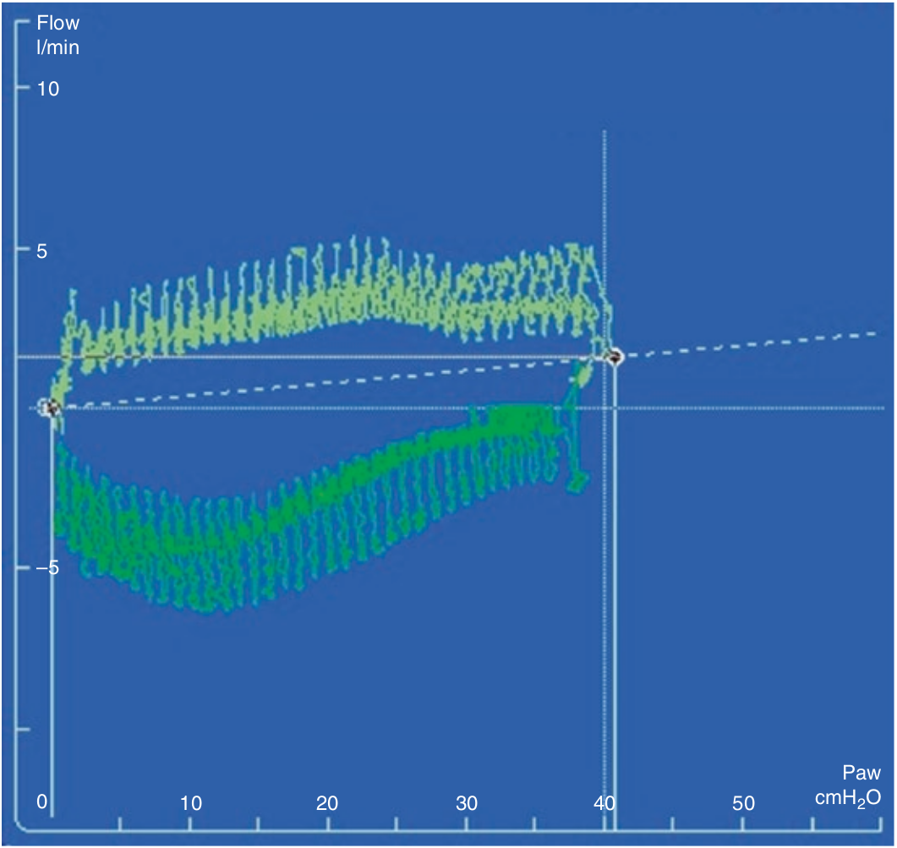

برای ارزیابی ویژگی های الاستیک (و فقط ویژگی های الاستیک) سیستم تنفس، میزان شدت جریان هنگام انبساط و تخلیه ریه باید کمتر از ده لیتر در دقیقه باشد (10L/min). اگر شدت جریان بیش از این مقدار باشد، جزء فشاری نیز افزوده میشود و لوپ را به سمت راست (فشار بالاتر) شیفت میدهد. بنابراین قبل از تفسیر باید اعتبار لوپ فشار-حجم را با بررسی لوپ شدت جریان-فشار بررسی کرد.

هنگام مانور فشار-حجم، شدت جریان:
۱ - ممکن است شکل لوپ را تحت تاثیر قرار دهد
۲ - ممکن است سبب شیفت لوپ در جهت محور X گردد
۳ - باید کمتر از 10 لیتر در دقیقه باشد
۴ - بستگی به کمپلیانس دارد
۵ - تمام موارد فوق